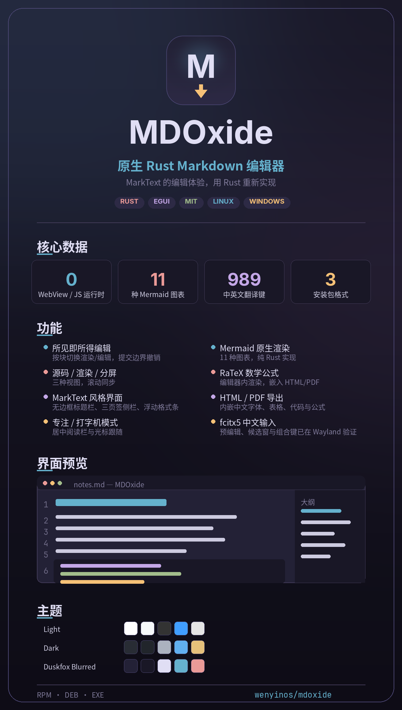

所见即所得
按块切换渲染与编辑态，提交边界撤销；源码 / 渲染 / 分屏三种视图。
RUST · EGUI · NATIVE
原生 Rust Markdown 编辑器
MarkText 的编辑体验，用 Rust 重新实现。
无 WebView、无 Electron、无 JavaScript 运行时。
Linux · Windows
按块切换渲染与编辑态，提交边界撤销；源码 / 渲染 / 分屏三种视图。
无边框标题栏、居中标签页、三页签侧边栏、选区浮动格式条、专注与打字机模式。
原生 Mermaid 渲染（11 种图表）与 RaTeX 数学公式，编辑器内直接显示。
内嵌中文字体、表格、代码块、链接与公式图片；HTML 自包含，暗色主题自动反色。
fcitx5 预编辑、候选窗、组合中 Backspace、提交与 Esc 取消已在 Wayland 真机验证。
直接读取 Zed 的 nvim-nightfox 色号，半透明表面，可配合 KWin 窗口模糊。
背景 #232136E3 · 正文 #E0DEF4 · 强调 #65B1CD

sudo dnf install ./mdoxide-editor-*.rpmsudo apt install ./mdoxide-editor_*.deb运行最新 Release 中的 MDOxide-*-setup.exe；SmartScreen 提示时选「更多信息 → 仍要运行」。
发布页提供 checksums.txt，可用 sha256sum -c checksums.txt 校验。